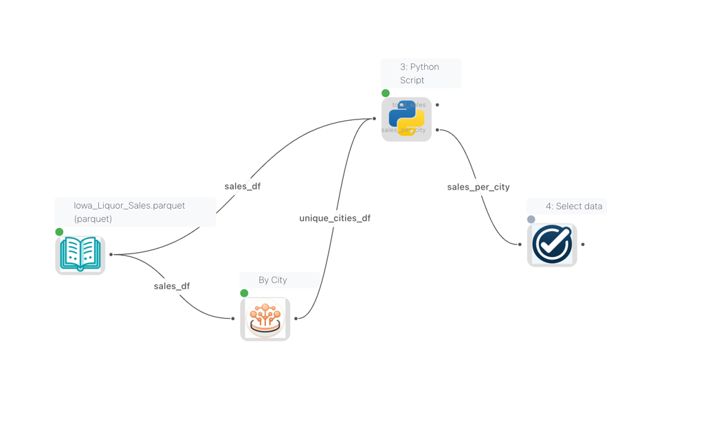
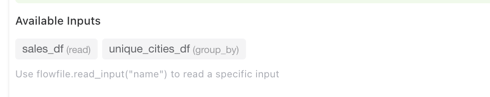
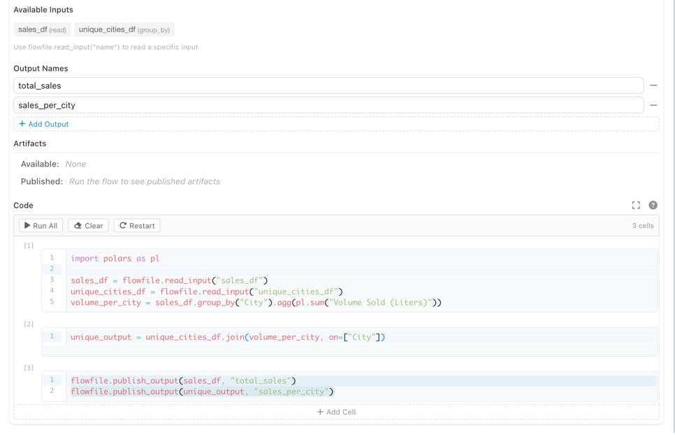

The flowfile_ctx API
flowfile_ctx is the object your code talks to when Python runs on a kernel. It is available wherever kernel Python runs — inside a Python Script node on the canvas, and inside catalog notebook cells. One API, two contexts: this page documents it once for both.
The object is injected automatically. No import is needed — flowfile_ctx is already in scope inside any cell or Python Script node connected to a kernel. The two display helpers are also bound as bare names, so display(df) and explore(df) work without the prefix.
Which calls exist where
Most of the API works identically in both contexts. The exception is the input/output calls, which move data along flow edges — a Python Script node has upstream and downstream connections, a notebook cell does not.
| Area | Python Script node | Notebook cell |
|---|---|---|
Reading input data (read_input, read_inputs) |
Yes | No — cells have no input edges |
Writing output data (publish_output) |
Yes | No — cells have no output edges |
Displaying results (display, explore) |
Yes | Yes |
Logging (log, log_info, …) |
Yes | Yes |
Local artifacts (publish_artifact, …) |
Yes | Yes |
Global artifacts (publish_global, …) |
Yes | Yes |
Catalog tables (read_catalog_table, write_catalog_table) |
Yes | Yes |
Shared files (get_shared_location) |
Yes | Yes |
The input/output calls raise a RuntimeError outside a flow run because there is no edge to read from or write to. Everything else — display, logging, artifacts, catalog tables, shared files — reaches the catalog and shared storage directly and behaves the same in a cell.
Writing Code
Inside a Python Script node connected to a kernel, you write standard Python code. The flowfile_ctx object is available automatically — no imports needed.
Reading Input Data
Node context
read_input / read_inputs read data arriving on a node's input edges. They only work inside a Python Script node. Notebook cells have no input edges — read your data with read_catalog_table instead.
When multiple nodes are connected to a Python Script node, each input gets a name derived from the source node's node reference. These names are visible as edge labels on the canvas, so you can see at a glance which data flows into which input.

Edge labels on the canvas showing the names of each connection into the Python Script node
The Python Script node settings panel displays an Available Inputs section that lists all connected inputs by name and source node type. Use these names with flowfile_ctx.read_input("name") to read a specific input.

The Available Inputs panel showing input names and their source node types
# Read the main input as a Polars LazyFrame
df = flowfile_ctx.read_input()
# Read a named input (when multiple inputs are connected)
orders = flowfile_ctx.read_input("orders")
customers = flowfile_ctx.read_input("customers")
# Read all inputs at once
all_inputs = flowfile_ctx.read_inputs()
# Returns: {"main": [LazyFrame, ...], "orders": [LazyFrame, ...]}
Setting input names
Input names come from the node reference of each source node. You can set or change a node's reference in its settings panel. If no reference is set, the default name is df_{node_id}. Names must be lowercase and can only contain letters, digits, and underscores.
Showing connection names on the canvas
To display connection names on the canvas, enable Show edge labels in the Flow Settings.
Writing Output Data
Node context
publish_output writes to a node's output edges. It only works inside a Python Script node. To persist a result from a notebook cell, write it to the catalog with write_catalog_table.
A Python Script node can publish multiple named outputs, each flowing to a different downstream node. To set this up:
- In the node settings panel, add output names under Output Names (e.g.
total_sales,sales_per_city) - In your code, use
flowfile_ctx.publish_output(df, "name")to publish data to each named output

The Python Script node settings showing two named outputs (total_sales and sales_per_city) and the code that publishes to them
# Publish a single (default) output
result = df.filter(pl.col("amount") > 100).select("id", "amount", "date")
flowfile_ctx.publish_output(result)
# Publish multiple named outputs
flowfile_ctx.publish_output(sales_df, "total_sales")
flowfile_ctx.publish_output(unique_output, "sales_per_city")
Both pl.LazyFrame and pl.DataFrame are accepted by publish_output.
Displaying Results
Use display() to render rich output in the output panel. It is bound as a bare
name in every kernel-executed cell and node, so no prefix or import is needed —
flowfile_ctx.display() is the same function if you prefer the explicit form.
# Display a matplotlib chart
import matplotlib.pyplot as plt
fig, ax = plt.subplots()
ax.bar(["A", "B", "C"], [10, 20, 15])
ax.set_title("Sales by Category")
display(fig, title="Sales Chart")
Supported display types:
| Object Type | Rendering |
|---|---|
polars.DataFrame / polars.LazyFrame |
Interactive sortable table |
matplotlib.figure.Figure |
PNG image |
plotly.graph_objects.Figure |
Interactive HTML |
PIL.Image.Image |
PNG image |
HTML string (e.g. "<b>hello</b>") |
Rendered HTML |
| Any other object | Plain text via str() |
A Polars DataFrame or LazyFrame renders as an interactive, sortable table
(LazyFrames are head-collected). Up to 10,000 rows are shown by default — pass
max_rows= to change the cap:
df = flowfile_ctx.read_input().collect()
display(df) # interactive table
display(df, max_rows=500) # smaller cap
The table's Copy and Download CSV work on the rows the table loaded, and a download holds at most 10,000 rows. To export a full frame, publish it as a node output and connect a Write data node.
For ad-hoc visual exploration of a frame, use explore() — it opens the full
Graphic Walker explorer (a data grid plus a drag-to-chart visualization builder)
inline:
explore(df)
Interactive mode
In cell-execution mode, the last expression in your code is automatically displayed — similar to Jupyter notebooks. A bare df shows its repr (what the object is), so nothing is collected by accident; call display(df) for the interactive table or explore(df) for the explorer.
Logging
Send real-time log messages to the flow viewer:
flowfile_ctx.log("Processing started")
flowfile_ctx.log_info("Loaded 1,234 rows")
flowfile_ctx.log_warning("Column 'price' has 5 null values")
flowfile_ctx.log_error("Failed to parse date column")
Artifacts
Artifacts let you persist Python objects (models, arrays, DataFrames) across executions within the same flow. They are scoped to the flow that created them.
Local Artifacts (Flow-scoped)
# Save a trained model
from sklearn.ensemble import RandomForestClassifier
model = RandomForestClassifier().fit(X_train, y_train)
flowfile_ctx.publish_artifact("rf_model", model)
# In a later execution or different node in the same flow:
model = flowfile_ctx.read_artifact("rf_model")
predictions = model.predict(X_test)
# List all artifacts in this flow
artifacts = flowfile_ctx.list_artifacts()
for a in artifacts:
print(f"{a.name} (node {a.node_id})")
# Delete an artifact
flowfile_ctx.delete_artifact("rf_model")
Artifacts are automatically serialized using the best format for the object type:
| Object Type | Format |
|---|---|
| Polars / Pandas DataFrame | Parquet |
| scikit-learn, NumPy, XGBoost, LightGBM | Joblib |
| Everything else | Cloudpickle |
Global Artifacts (Catalog)
Global artifacts are stored in the Flowfile catalog and persist beyond the current flow. They can be retrieved from any flow or session.
# Publish to the global catalog
artifact_id = flowfile_ctx.publish_global(
"sales_model_v2",
model,
description="Random Forest trained on Q4 data",
tags=["ml", "classification"],
)
# Retrieve from the global catalog (latest version)
model = flowfile_ctx.get_global("sales_model_v2")
# Same artifact, addressed by its qualified reference
model = flowfile_ctx.get_global("General.default::sales_model_v2")
# Get a specific version
model_v1 = flowfile_ctx.get_global("sales_model_v2", version=1)
# List all global artifacts
artifacts = flowfile_ctx.list_global_artifacts(tags=["ml"])
for a in artifacts:
print(f"{a.name} v{a.version} — {a.python_type}")
# Delete a global artifact
flowfile_ctx.delete_global_artifact("sales_model_v2")
Registered flow required to persist
publish_global needs a flow registration to persist the artifact. Core normally auto-provisions a scratch registration for you, so this works in most cases. When no registration is available it returns -1 and skips persisting rather than raising.
Referring to an artifact by name
Every name-based operation (get_global, delete_global_artifact, and the corresponding /artifacts/by-name/... routes) accepts two forms:
| Form | Example | Resolution |
|---|---|---|
| Bare name | "sales_model_v2" |
Searched across every namespace you can see. Fails with a conflict when the same name exists in more than one namespace. |
| Qualified reference | "General.default::sales_model_v2" |
catalog.schema before the separator, artifact name after it. Unambiguous by construction. |
The reference is split on the last ::, so artifact names themselves cannot contain :: — publish_global rejects such a name. If the namespace path no longer resolves (a renamed catalog or schema) the bare name is used as a fallback, and only fails when that name is ambiguous. When no version is given, the newest active version is resolved.
Version deletes are guarded
DELETE /artifacts/{id} refuses to delete the current latest version while other versions exist (409 CANNOT_DELETE_LATEST, overridable with force=true) and refuses to delete the last remaining version (delete the artifact itself with DELETE /artifacts/by-name/{ref} instead). Kernel calls authenticate as the internal service principal and bypass both guards, so delete_global_artifact behaves exactly as before.
Artifact Persistence
Local artifacts are automatically saved to disk and recovered if the kernel restarts — no configuration needed.
Catalog Tables
Kernel cells can read and write Delta-format catalog tables directly, mirroring the flowfile_frame.read_catalog_table / write_catalog_table API. The kernel performs the Delta write locally (it has direct access to the catalog storage) and reports the resulting metadata to Core — Core never materialises the dataset.
The kernel exposes three typed handles — CatalogRef, SchemaRef, TableRef — for path-style navigation. The top-level read_catalog_table / write_catalog_table still accept plain strings for one-shot scripts.
import polars as pl
# Navigate the hierarchy
cat = flowfile_ctx.get_catalog("General") # CatalogRef
sch = cat.get_schema("default") # SchemaRef
orders = sch.get_table_ref("orders") # TableRef (may not exist yet)
# Shortcut from a catalog ref
orders = cat.get_table_ref(schema_name="default", table_name="orders")
# Or grab the seeded default schema directly
sch = flowfile_ctx.default_schema()
# Discover everything available
for cat in flowfile_ctx.list_catalogs():
print(cat.name)
for sch in cat.list_schemas():
for tbl in sch.list_tables():
print(f" {sch.name}.{tbl.name} ({tbl.row_count} rows)")
# Read via a ref — equivalent to flowfile_ctx.read_catalog_table(orders)
df = orders.read()
df_v3 = orders.read(delta_version=3) # time travel
# Write via the ref — creates the table if it doesn't exist yet
new_data = pl.DataFrame({"id": [1, 2, 3], "name": ["a", "b", "c"]})
orders = orders.write(new_data, write_mode="overwrite") # returns refreshed ref
# Per-mode writes
orders.write(new_data, write_mode="append")
orders.write(new_data, write_mode="upsert", merge_keys=["id"])
orders.write(new_data, write_mode="update", merge_keys=["id"])
orders.write(new_data.select("id"), write_mode="delete", merge_keys=["id"])
orders.write(new_data, write_mode="error") # raises if table already exists
# Schema-level convenience: same effect, no intermediate ref
sch.write_table(new_data, "customers", write_mode="overwrite")
sch.read_table("customers")
# String form still works for one-shot usage
lf = flowfile_ctx.read_catalog_table("orders") # default schema
lf = flowfile_ctx.read_catalog_table("orders", schema="sales")
flowfile_ctx.write_catalog_table(new_data, "customers", write_mode="overwrite")
write_mode |
Behaviour | Requires merge_keys |
|---|---|---|
overwrite |
Replace the table's data (Delta version increments). | No |
append |
Add rows; schema_mode="merge" so new columns are tolerated. | No |
upsert |
Insert new rows, update existing rows matched by merge keys. | Yes |
update |
Update only existing rows that match merge keys. | Yes |
delete |
Remove rows matching merge keys. | Yes |
error |
Fail if the table already exists. | No |
No virtual or scd2 mode in the kernel
flowfile_frame.write_catalog_table also supports "virtual" (backs a table by a registered flow) and "scd2" (see Slowly Changing Dimensions) write modes. The kernel intentionally does not expose either — flow registration and version-history writes stay in the visual editor or flowfile_frame.
Shared Files
Use flowfile_ctx.get_shared_location() to write files that are accessible across all Flowfile services and survive container restarts:
# Write a CSV to the shared directory
output_path = flowfile_ctx.get_shared_location("reports/monthly.csv")
df.collect().write_csv(output_path)
# The file is now accessible from other nodes and services
flowfile_ctx API Reference
The following functions are available inside kernel code via the flowfile_ctx object. display and explore are additionally bound as bare names.
Data I/O
| Function | Description |
|---|---|
read_input(name="main") |
Read input data as a pl.LazyFrame. If more than one source is provided, it attempts to concat all sources. |
read_inputs() |
Read all named inputs as dict[str, list[LazyFrame]] |
publish_output(df, name="main") |
Write a DataFrame/LazyFrame as output |
Local Artifacts
| Function | Description |
|---|---|
publish_artifact(name, obj) |
Store a Python object in the flow's artifact store |
read_artifact(name) |
Retrieve a stored artifact |
delete_artifact(name) |
Remove an artifact |
list_artifacts() |
List all artifacts in the current flow |
Global Artifacts
| Function | Description |
|---|---|
publish_global(name, obj, ...) |
Persist an object to the global catalog |
get_global(name, version=None) |
Retrieve from the global catalog; name may be bare or qualified catalog.schema::name, latest version when unset |
list_global_artifacts(...) |
List available global artifacts |
delete_global_artifact(name, ...) |
Delete a global artifact (same reference forms) |
Display & Logging
| Function | Description |
|---|---|
display(obj, title="") |
Render rich output (frames, charts, images, HTML, text) |
explore(obj, title="") |
Open the Graphic Walker explorer for a Polars frame |
log(message, level="INFO") |
Send a log message to the flow viewer |
log_info(message) |
Shortcut for log(message, "INFO") |
log_warning(message) |
Shortcut for log(message, "WARNING") |
log_error(message) |
Shortcut for log(message, "ERROR") |
Utilities
| Function | Description |
|---|---|
get_shared_location(filename) |
Get a path in the shared directory |
Related Documentation
- Kernel Execution — creating kernels, the Python Script node, and the Node Designer
- Notebooks — running
flowfile_ctxcells in the catalog - Node Designer — custom nodes with kernel support
- Kernel Architecture — technical deep-dive for developers